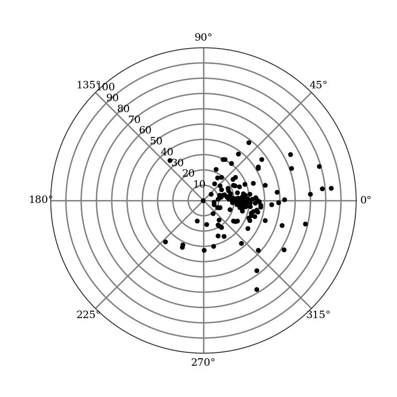

This page links to materials developed or refined as part of developing the review video + text for the use of a map of globular clusters to determine the size of our galaxy and our place in it.
Browser-based simulations of parameterized distributions
3D simulation, allowing view from multiple perspectives (simulation, code)
"radar-view"-only simulation, allowing a view matching Earth-centric mapping (simulation, code)
Representations of our galaxy's globular clusters
Milky Way Globular cluster information was downloaded from NASA's HEASARC research group (documentation, file download)
Map of globular clusters as measured from Earth, produced using Python (code).

Blank map of globular clusters as measured from Earth, produced using Python (code).